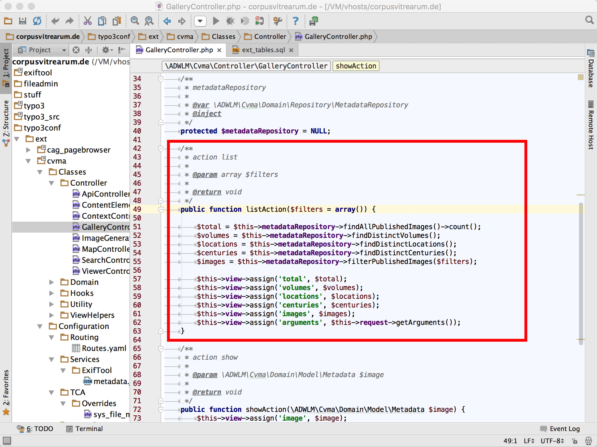

11.04.2016 | Hochschule Mainz
Nachhaltige Online-Applikationen in den Geisteswissenschaften
Modellierung & Implementierung
Torsten Schrade | Download: https://git.io/vVHhW
Gliederung
- Digitale Nachhaltigkeit in den Geisteswissenschaften
-
Herausforderungen für nachhaltige
geisteswissenschaftliche Online-Applikationen -
Ebenen einer nachhaltigen Modellierung und
Implementierung von Online-Applikationen -
Anwendungsbeispiel: Das Online-Bildarchiv des
Projektes »Corpus Vitrearum Medii Aevi«
01
Digitale Nachhaltigkeit in den Geisteswissenschaften
Das Problem
404 - Not Found

Uuuups!!!
Ihre geisteswissenschaftliche Online-Applikation konnte nicht gefunden werden...
Gründe für Nichtverfügbarkeit
Aktualität des Themas
Memorandum »Digitale Forschungsinfrastrukturen« (30.03.2016)
Ziel der Unterzeichnenden ist es, die Voraussetzungen für die nachhaltige Bereitstellung digitaler Forschungsinfrastrukturen für die Geistes- und Kulturwissenschaften innerhalb Deutschlands zu schaffen, damit ihre Forschenden und Lehrenden zur Spitzenforschung und deren Entwicklung langfristig beitragen können.
Quelle DARIAH: http://dx.doi.org/10.3249/DARIAH-00000001
Aktualität für die Forschungsförderung
DFG-Förderkriterien für wissenschaftliche Editionen (11.2015)
Weil bei der Texterstellung inzwischen immer digitale Werkzeuge zum Einsatz kommen, ist zu gewährleisten, dass die Arbeitsweise dem state-of-the-art moderner Veröffentlichungsmethoden entspricht
(Softwareeinsatz, Arbeitsprozesse, Qualitätssicherung).
Quelle DFG: http://bit.ly/1X8kG4U, S. 2
Aktuelle Publikation zum Thema
Simon Hettrick, The Software Sustainability Institute
February 2016
PDF: http://bit.ly/23jxw7D
Many researchers know how to code, but few understand the wider set of skills that are needed to develop reliable, reproducible and reusable software. [...] software engineering should be incorporated [...] at the very start of a research career [S.14]
▶︎ Digital Humanities "Craftsmanship"
Siehe auch: https://de.wikipedia.org/wiki/Software_Craftsmanship
02
Herausforderungen für nachhaltige geisteswissenschaftliche Online-Applikationen
Forschungsdaten
Beispiele für geisteswissenschaftliche Forschungsobjekte


Hoher Bedarf
Projekte mit digitalen Komponenten seit 2000 (ADW Mainz)
Projektlaufzeiten
Grundlagenforschung im Akademienprogramm (ADW Mainz)
Herausforderungen
Projektlaufzeiten im Verhältnis zum technischen Innovationszyklus

03
Ebenen einer nachhaltigen Modellierung und Implementierung von Online-Applikationen
Kommunikation? Kommunikation!
Der Webdesigner und die Hecke...
Ein Twitter-Erlebnis von @webrocker
Mein Medium "Web" ist extrem komplex, verändert sich ständig und erfordert die konstante Bereitschaft, sich weiterzubilden [...] Nach einem in dieser Hinsicht eher recht interessanten Arbeitstag twitterte ich gestern Abend also:
efeu hecke geschnitten. das leben kann so schön einfach sein… einfache arbeit, sofort ergebnis, brain idled… toll. und keiner redet rein.
— a Tom (@webrocker) 5. August 2014
Die Antwort-Lawine
@webrocker „Der alte Schnitt der Hecke hat uns besser gefallen. Können wir die zum Vergleich noch mal sehen?“
— Frederic Hemberger (@fhemberger) 5. August 2014
@fhemberger @webrocker „Das grün ist irgendwie … nicht grün genug. Findet meine Frau auch. Und … kann man die Hecke größer machen?“
— Matthias Mees (@yellowled) 5. August 2014
"Das ist doch nur Garten, keine Raketenwissenschaft" @MadeMyDay
— a Tom (@webrocker) 6. August 2014
@webrocker Wir sind ein bisschen enttäuscht, das das Design der Hecke nicht so richtig unserem Entwurf in Word entspricht.
— ker0zene (@ker0zene) 6. August 2014
Möchte eine einfache #Hecke, die ich nicht pflegen muss. Eine Reihe Blätter, keine Äste, keine Wurzeln. Untergrund ist Beton. @webrocker
— Regimekritiker (@regimekritiker) 7. August 2014


Prozess im Überblick
04
Anwendungsbeispiel
Das Online-Bildarchiv des Projektes »Corpus Vitrearum Medii Aevi«
Das Online-Bildarchiv des CVMA
Einige Funktionalitäten im Überblick

Website: http://www.corpusvitrearum.de/


Modellierung & Entwicklung
Einheitliche und nachvollziehbare Sprache auf allen Ebenen
 Domain Model
Domain Model
 Applikations-Code
 Datenbankschema
Datenbankschema
 XMP Schnittstelle
XMP Schnittstelle

{kind=link}
{kind=link}
{kind=link}
{kind=link}
{kind=link}
{kind=link}
{kind=link}
{kind=link}
{kind=link}
{kind=link}
{kind=link}
{kind=link}
{kind=link}
{kind=link}
Fazit
Nachhaltige Modellierung und Implementierung geisteswissenschaftlicher Online-Applikationen bedeutet...
- ... eine beständige Kommunikation aller Projektbeteiligten.
- ... ein gemeinsames Vokabular festzulegen und dies auf allen Ebenen anzuwenden.
- ... forschungsgetriebene, agile Entwicklungsmethoden einzusetzen.
- ... einen nachvollziehbaren Entwicklungsprozess durch Versionskontrolle zu gewährleisten.
- ... die Applikations-Infrastruktur zu virtualisieren und zu automatisieren.
- ... Softwaretests vor jedem Live-Deployment durchzuführen.
- ... die Applikation im Produktivbetrieb kontinuierlich zu überwachen.
- ... die Forschungsdaten über Schnittstellen bereitzustellen.
Literatur & Verwendete Software
Literatur
- Fowler u.a., Manifest für Agile Softwareentwicklung, 2001
- Hettrick, Research Software Sustainability, Edinburgh 2016
- Hochschule Koblenz, "Status Quo Agile", Koblenz 2015
- Passig/Jander, Weniger schlecht programmieren, Köln 2014
- Vernon, Implementing Domain Driven Design, Upper Saddle River NJ u.a 2013
- Wolff, Continuous Delivery, Heidelberg 2015
Verwendete Software
- Impress.js (Präsentation)
- jQuery (Animationen)
- Unite Gallery (Bildergallerien)
- Magnific Popup (Lightbox)
- Chartist (Diagramme)
- Skeleton CSS (CSS Boilerplate)
Download
- https://github.com/metacontext/nachhaltige-online-apps
-
Alle Inhalte, Illustrationen und Bilder sind frei zur Weiterverwendung und Modifikation.
Lizenz: CC-BY 4.0, Torsten Schrade